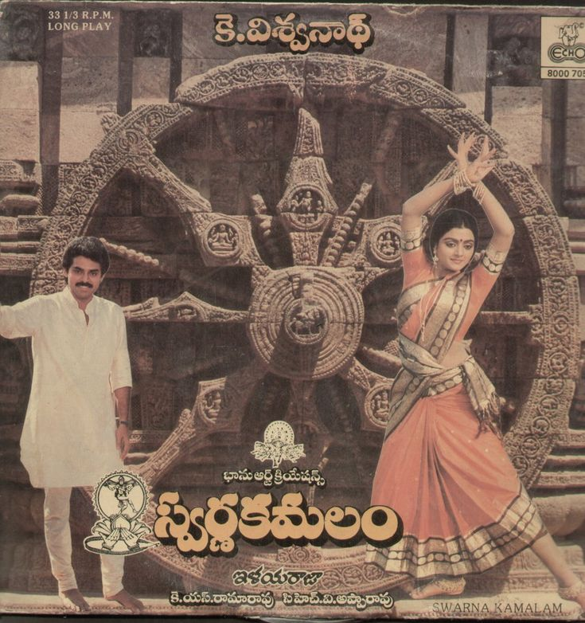

|  |
| Movie Name | Swarna Kamalam--1986 |
|---|---|
| Director | K Vishwanath |
| Cast | Venkatesh , Bhanu Priya ,sakshi Ranga Rao |
| Description | A young woman hails from a family of dancers. Unfortunately, she doesn't share their passion. Things take a turn when she meets a man who makes her believe that dancing is a beautiful art |
| Duration | 02:23:00 hrs |
| back to home |